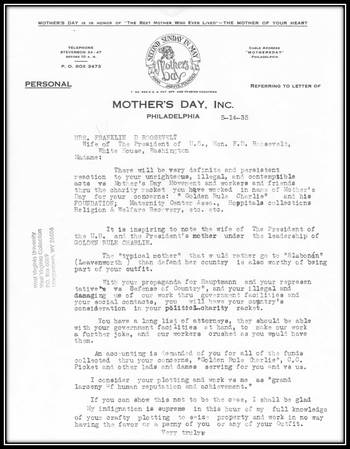

Unearthing the most complete picture of the origins of Mother’s Day began with a misplaced cardboard box in the kitchen of a West Virginia church.
It was 2003, and Katharine Antolini, then a graduate student researching the history of motherhood, had been asked to speak at the site in Grafton, where the first known celebration of Mother’s Day took place in 1908.
During the church tour, she stumbled upon the box on the floor of the kitchen. “Some of the documents were almost 100 years old,” she told Quartz. “I was like, ‘You can’t leave these here!'”
Antolini offered to archive the papers, and in doing so, became fascinated with what she found: the unlikely story of Anna Jarvis, who first spent years crusading to make Mother’s Day a widely observed holiday—and then spent the rest of her life trying to undo it.
The project inspired Antolini to keep digging, and Jarvis’ story became her PhD dissertation and later a book, Memorializing Motherhood: Anna Jarvis and the Struggle for Control of Mother’s Day.
“I realized how very complicated the history was,” Antolini said. “She ultimately failed, of course. But she never gave up until her death of trying to fight for her day.”
How did Mother’s Day come to be?
When her mother, Ann Reeves, died in 1905, Jarvis organized the first observances of Mother’s Day at the Andrews Methodist Episcopal Church in Grafton, and later in Philadelphia, Pennsylvania.
She chose the second Sunday in May because it was the Sunday closest to her mother’s death. The white carnation, Reeves’ favorite flower, became the holiday’s symbol.
Jarvis, who had no kids of her own, had a singular understanding of what Mother’s Day should mean. She saw it as a day for children to visit their mothers at home and to remember the sacrifices that they had made.
“This is not a celebration of maudlin sentiment. It is one of practical benefit and patriotism, emphasizing the home as the highest inspiration of our individual and national lives,” Jarvis wrote.
She began a letter-writing campaign, reaching out to anyone who she thought could help promulgate the idea. “Any mayor, merchant or minister,” Antolini said. She wrote to Teddy Roosevelt. To Mark Twain. To every state governor, every year.
By 1914, when most states had already recognized the day locally, the US congress passed a law designating Mother’s Day a national holiday. A day later, president Woodrow Wilson issued an official proclamation.
Why did the holiday’s champion crusade against it?
As Mother’s Day grew more popular, Jarvis became distressed by what she saw as other groups co-opting the day she felt a sense of ownership over.
“She battled over the meaning of Mother’s Day,” Antolini said. Jarvis took issue with businesses, like greeting-card companies and florists, that she felt began exploiting “her day” to maximize their own profits.
Jarvis also was angered by the actions of charities like the American War Mothers, that began selling white carnations on Mother’s Day as a fundraising tool. She once was arrested in Philadelphia for showing up unannounced at the group’s convention.
She crashed the event, yelling at members of the nonprofit organization for exploiting Mother’s Day, Antolini said. A newspaper account said Jarvis was initially charged with disturbing the peace, but was later let off by a local magistrate.
“It was very much tied to her ego…that was her life, her fortune—everything was invested in it,” Antolini said. “When people started to take the day and lay claim to it and use it for different purposes, that bothered her.”
How is Mother’s Day celebrated today around the world?
Mother’s Day is celebrated in dozens of countries around the world, often on the second Sunday of May, following the American tradition.
In France, a 1950 law established the fête des mères on the fourth Sunday in May. Britain celebrates Mothering Sunday, the fourth Sunday of Lent. In Mexico, the day is a true national holiday, where “the entire nation stops what it is doing in the afternoon and eats some serious lunch with mom,” per the Washington Post (paywall).
The church where Mother’s Day began as it looks today.
The mother of Mother’s Day, Anna Jarvis.

A letter Jarvis wrote to Eleanor Roosevelt.
Previous
Next
In 2012, even North Korea began its own version of the celebration, reportedly marked by a military parade (paywall).
Today, Mother’s Day is marked by unique traditions specific to different countries and families—a fact that buoys Antolini, though she says Jarvis would have hated it.
“She would be mad at me about this, but I think it’s a holiday that still is hugely popular precisely because it can mean different things to different people,” Antolini said. “I think that’s why it’s lasted so long—because it can mean so many things.”
[Taken from: QUARTZ [Article Link] | written by Elisabeth Ponsot | Article Title:The history of Mother’s Day is actually quite dark]